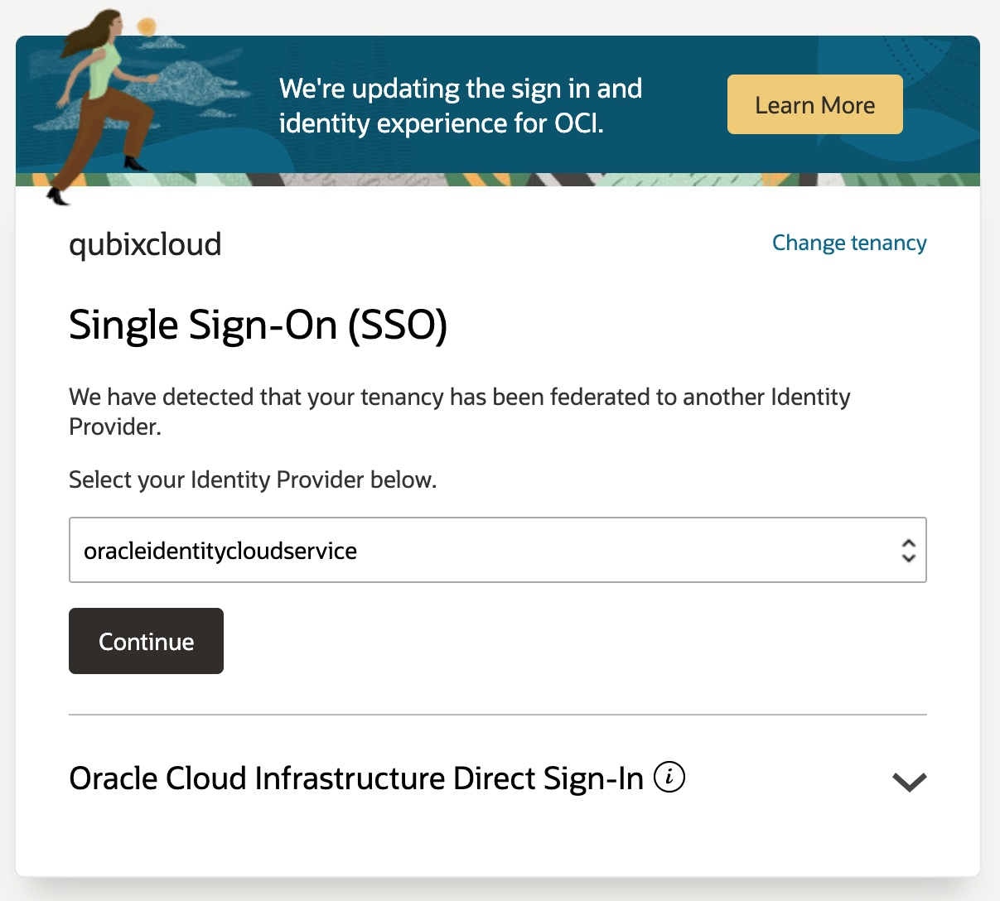
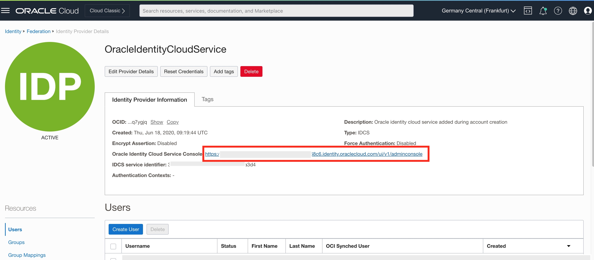
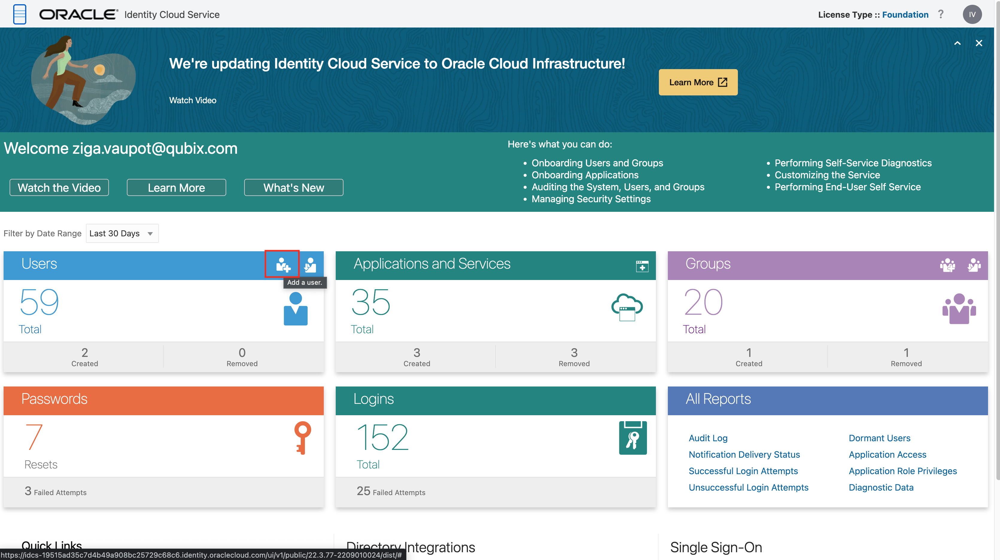
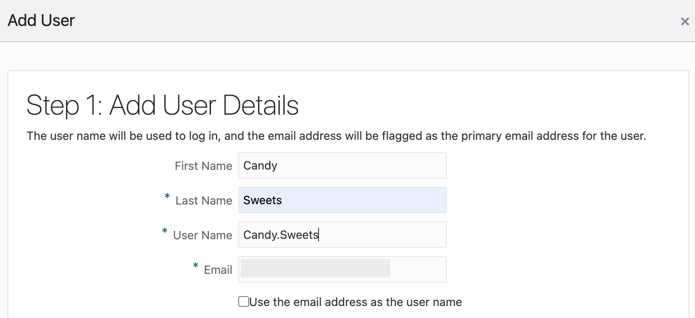
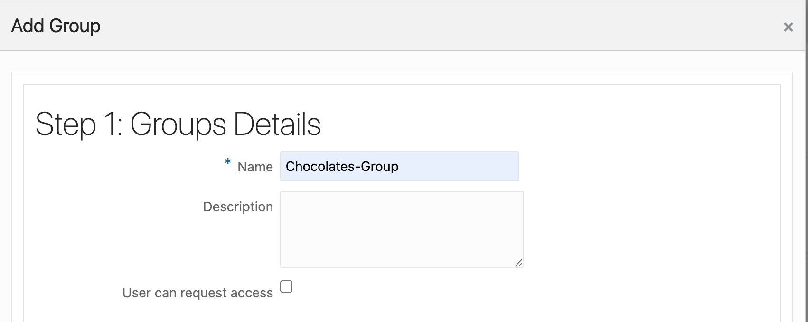
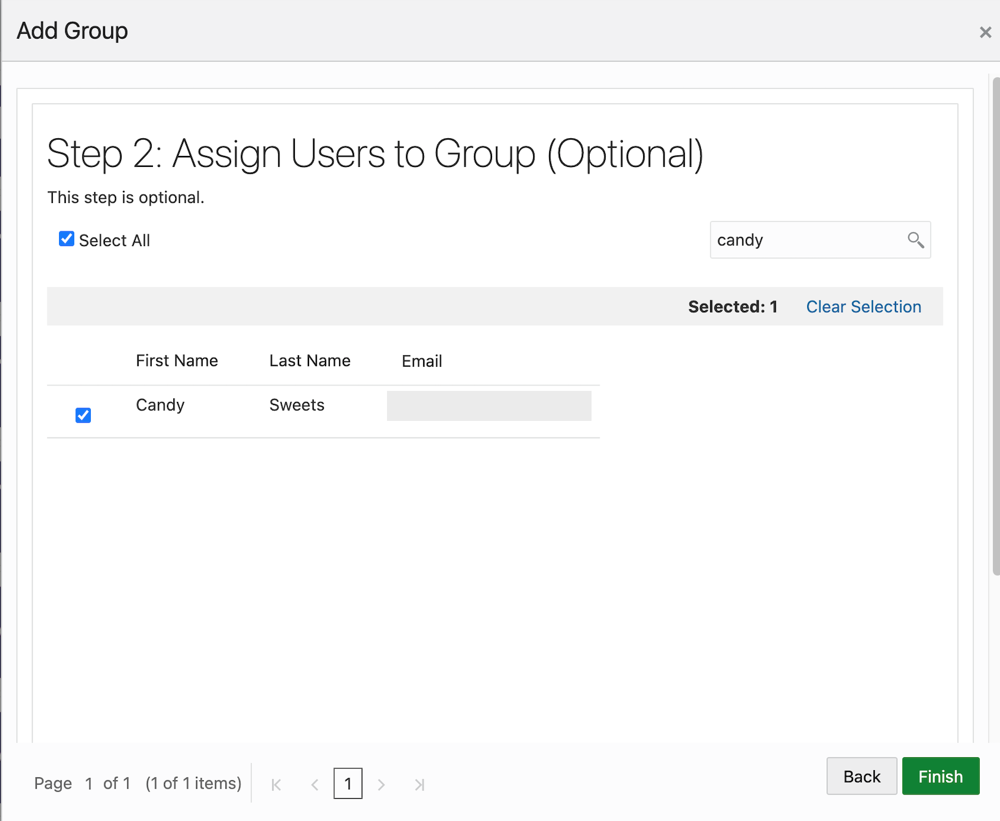
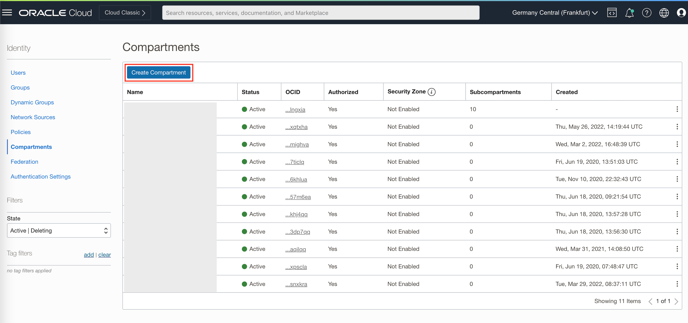
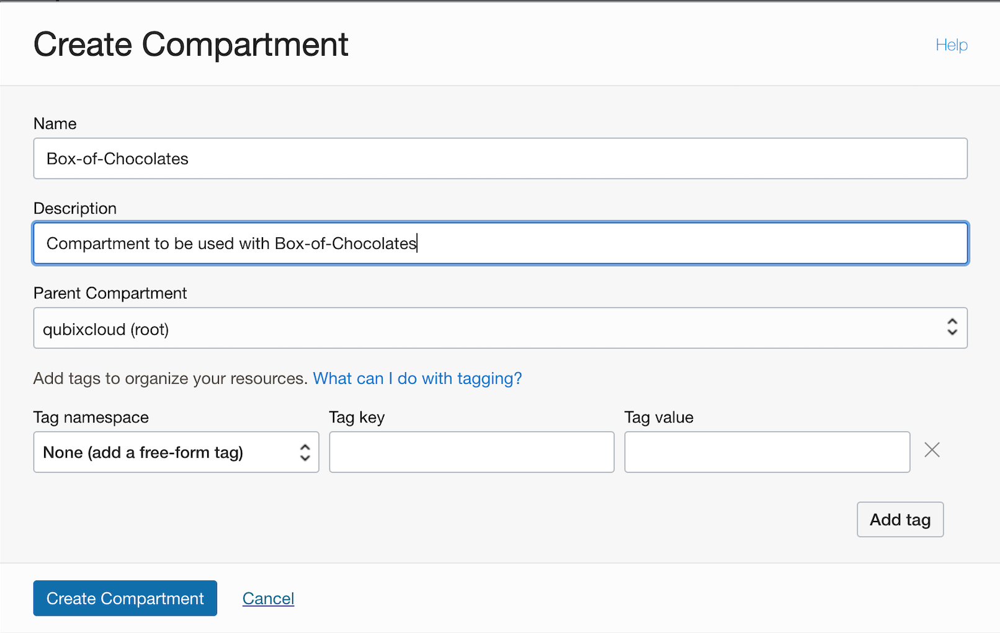
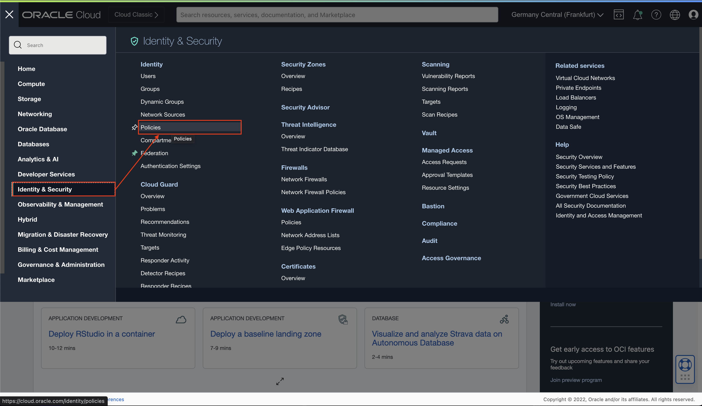

Step 1: Log in OCI
Log into cloud.oracle.com and priced your Cloud Account Name.
Click Next.

Choose oracleidentityservice as Identity Provider and click Continue.

Enter your username and password.

Step 2: Create a new user in IDCS
From the Navigator menu (top-left cornent) select Identity & Security and Federation.

In the Providers list click on OracleIdentityCloudService link.

OracleIdentityCloudService console page opens. Navigate to Oracle Identity Cloud Service Console by clicking on the URL.

When Oracle Identity Cloud Service Console opens, click on Add a user icon to add a new user.

Follow the Add user wizard and provided user details in the first step:

We'll use user with username Candy.Sweets and provide a password of your choice in the second step.

A new user is now created.
Step 3: Create a new user group in IDCS
From the Navigator menu on the right or from Groups portlet in Identity Cloud Service Console Create a new Group.

Search for your new user and add it to the new group.

Step 4: Create a new compartment
From the Navigator menu select Identity & Security and Compartments.

To create a new compartment click Create Compartment.

Provide Name, Description and Parent Compartment, optionally add Tags, and click Create Compartment.

Step 5: Create a new OCI Group and map it to an IDCS Group
In order to create policies for the Compartment you've just created, you need to create a new OCI Group. This group will map to previously created IDCS Group.
Use Navigator to navigate again to Identity & Security and then choose Groups.

Click Create Group

Provide Name and Description and create a new group.

Navigate back to OracleIdentityCloudService details page. Click on Group Mappings and then on Add Mappings button.

This will open Add Mappings popup window. Select your new group from Identity Provider Group list and your newly created OCI group from the OCI Group list.

Step 6: Create a new Policy which grants manage privileges in a new Compartment to the new OCI Group
Once again use Navigator to navigate to Identity & Security and choose Policies.

In the Console click Create Policy.

Provide a new Policy Name and Description.
Select root compartment of your tenancy.
In Policy Builder section, search for Let compartment admins manage the compartment in the Common policy templates pulldown list.
Make sure Groups is selected and then choise your newly created OCI Group from the list of available OCI Groups. And choose your root compartment for Location.

Your policy should look like this:
Allow group OCI_Chocolate-Group to manage all-resources in tenancy <your root comparment>
Click Create to create a new policy in your root compartment.